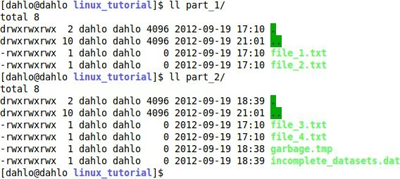

Linux Introduction
NOTE: in syntax examples, the dollar sign ($) is not to be printed. The dollar sign is usually an indicator that the text following it should be typed in a terminal window.
1. Connecting to UPPMAX
The first step of this lab is to open a ssh connection to UPPMAX. You will need a ssh program to do this:
On Linux: it is included by default, named Terminal.
On OSX: it is included by default, named Terminal.
On Windows: Google MobaXterm and download it.
Fire up the available ssh program and enter the following (replace username with your uppmax user name). -X means that X-forwarding is activated on the connection, which means graphical data can be transmitted if a program requests it, i.e. programs can use a graphical user interface (GUI) if they want to.
bash
$ ssh -X username@milou.uppmax.uu.se
and give your password when prompted. As you type, nothing will show on screen. No stars, no dots. It is supposed to be that way. Just type the password and press enter, it will be fine.
Now your screen should look something like this:

2. Getting a node of your own
Usually you would do most of the work in this lab directly on one of the login nodes at uppmax, but we have arranged for you to have one core each to avoid disturbances. This was covered briefly in the lecture notes.
bash
$ salloc -A g2015005 -t 07:00:00 -p core -n 1 --no-shell --reservation=g2015005_mon &
check which node you got (replace username with your uppmax user name)
bash
$ squeue -u username
should look something like this

where q34 is the name of the node I got (yours will probably be different). Note the numbers in the Time column. They show for how long the job has been running. When it reaches the time limit you requested (3 hours in this case) the session will shut down, and you will lose all unsaved data. Connect to this node from within uppmax.
bash
$ ssh -X q34
Note: there is a uppmax specific tool called jobinfo that supplies the same kind of information as squeue that you can use as well ($ jobinfo -u username).
3. Moving and Looking Around
It is good to know how to move around in the file system. I'm sure you all have experienced this using a graphical user interface (GUI) before, Windows Explorer in Windows and Finder in OSX. Using the command line can be confusing at first, but the more your do it, the easier it gets.
When you connect to UPPMAX, you will start out in your home folder. The absolute path to your home folder is usually /home/<username>
Start with looking at what you have in your home folder. The command for this ls, and it stand for LiSt (list).
bash
$ ls -l
You should see something similar to:

We can start off with moving to your glob folder. The glob folder is the folder you will keep most of your files in. It can contain about 10 times more data than the home folder, so all analysis will have to be run there. The reason for the difference in size is because your home folder is backed up, and your glob folder is not. Backup is expensive, so we don't want to waste it on temporary files generated by your analysis programs, which could be re-run in less than a day.
As seen in the lecture, the command for moving around is cd. The command stands for Change D irectory and does exactly that. It is the equivalent of double clicking a folder in a GUI. To enter your glob folder, simply type
bash
$ cd glob
We can easily see that this is a relative path, since it does not start with a / That means that this command will only work when you are standing in your home folder. If you are standing somewhere else and say that you want to enter a folder named glob, the computer will tell you that there is no folder named glob where you are located at the moment. The absolute path to your glob folder would be /glob/<username>
It is the exact same things as if you are using a GUI. If you are standing on your desktop, you can double click a folder which is located on your desktop. But if you are standing in another folder, you can't double click on the same folder, because it is just not located in that folder. You have to move to your desktop first, and then double click it.
If you look around in your glob folder, you probably only have a folder called private*. This is how everyone's glob folder looks before you start putting files there.
Next, let's move to the course's project folder. A project folder is like a home folder, but it is shared between all the members of the project. It is the common file area in the project, and the place where you will store your raw data and important analysis results. This course's project id is g2015005, so the path to the project folder is /proj/g2015005
NOTE: Remember to tab-complete to avoid typos and too much writing.
bash
$ cd /proj/g2015005
Look at what is in the folder (please ignore the old project id, there are limit to how many pictures I want to spend the time to edit..):

If you look closely, you'll see that I did not write ls -l, but used ll instead. Typing ls -l all the time is.. more annoying than one would think, so someone came up with the good idea to add a shortcut here. If you type ll, it is the same as typing ls -l Use it from now on.
Now we have practised moving around and looking at what we have in folders. The next step will show you how to do the same thing, but without the moving around part. If we want to look at what we have in our home folder, while standing in the course's project folder, we type $ ll /home/<username>/ and remember to substitute <username> with your own user name.
bash
$ ll /home/dahlo/
Since most programmers are lazy (efficient), there is a shortcut to your home folder so that you don't have to write it all the time. If you write ~/ it means the same as if you would write /home/<username>/
Let's move back to our home folder before going to the next step. There are at least 3 different ways of getting to your home folder, and they are all equally good:
bash
$ cd /home/<username>
or
bash
$ cd ~/
or
bash
$ cd
4. Copying files needed for laboratory
To be able to do parts of this lab, you will need some files. To avoid all the course participants editing the same file all at once, undoing each other's edits, each participant will get their own copy of the needed files.
The files are located in the folder /proj/g2015005/labs/linux_tutorial
or they can be downloaded if you are not on uppmax at the moment, files.tar.gz (instruction on how to download further down)
For structures sake, first create a folder named ngs-intro in your glob, and a folder called linux_tutorial inside that folder, where you can put all your lab files.
This can be done in 2 ways:
bash
$ mkdir ~/glob/ngs-intro/
$ mkdir ~/glob/ngs-intro/linux_tutorial
or
bash
$ mkdir -p ~/glob/ngs-intro/linux_tutorial
The reason for this is that Linux will not like it if you try to create the folder linux_tutorial inside a folder (ngs-intro) that does not exist yet. Then you have the choice to either first create ngs-intro (the first way), or to tell Linux to create it for you by giving it the -p option (the second way).
Next, copy the lab files to this folder. -r means recursively, which means all the files including sub-folders of the source folder. Without it, only files directly in the source folder would be copied, NOT sub-folders and files in sub-folders.
NOTE: Remember to tab-complete to avoid typos and too much writing.
```bash
Ex: cp -r
$ cp -r /proj/g2015005/labs/linuxtutorial/* ~/glob/ngs-intro/linuxtutorial ```
If you are unable to copy the files on uppmax, you can download the files instead of copying them. This is done with the command wget (web get). It works kind of the same way as the cp command, but you give it an source URL instead of a source file, and you specify the destination by giving it a prefix, a path that will be appended in front on the file name when it's downloaded. I.e. if you want to download the file http://somewhere.com/my.file and you give it the prefix ~/analysis/, the downloaded file will be saved as ~/analysis/my.file
```bash
Ex: wget -P
$ wget -P ~/glob/ngs-intro/linux_tutorial http://scilifelab.github.io/courses/introngs1502/labs/files/linux-intro/files.tar.gz ```
5. Unpack Files
Go to the folder you just copied and see what is in it.
NOTE: Remember to tab-complete to avoid typos and too much writing.
```bash $ cd ~/glob/ngs-intro/linux_tutorial
$ ll ```
tar.gz is a file ending give to compressed files, something you will encounter quite often. Compression decreases the size of the files which is good when downloading, and it can take thousands of files and compress them all into a single compressed file. This is both convenient for the person downloading and speeds up the transfer more than you would think.
To unpack the files.tar.gz file use the following line while standing in the newly copied linux_tutorial folder.
bash
$ tar -xzvf files.tar.gz
The command will always be the same for all tar.gz files you want to unpack. -xzvf means eXtract from a Zipped file, Verbose (prints the name of the file being unpacked), from the specified File (f must always be the last of the letters).
Look in the folder again and see what we just unpacked:

6. Copying and Moving Files
Let's move some files. Moving files might be one of the more common things you do, after cd and ls. You might want to organise your files in a better way, or move important result files to the project folder, who knows?
We will start with moving our important result to a backed up folder. When months of analysis is done, that last thing you want is to lose your files. Typically this would mean that you move the final results to your project folder.
In this example we want to move the result file only, located in the folder importantresults, to our fake project folder, called backedupprojfolder. The syntax for the move command is:
bash
$ mv <source> <destination>
First, take a look inside the important_results folder:
bash
$ ll important_results

You see that there are some unimportant temporary files that you have no interest in. Just to demonstrate the move command, I will show how you would move one of these temporary files to your backed up project folder:
bash
$ mv important_results/temp_file-1 backed_up_proj_folder/
Now do the same, but move the important DNA data file!
Look in the backed up project folder to make sure you moved the file correctly.
bash
$ ll backed_up_proj_folder

Another use for the move command is to rename things. When you think of it, renaming is just a special case of moving. You move the file to a location and give the file a new name in the process. The location you move the file to can of very well be the same folder the file already is in. To give this a try, we will rename the folder astrangename to a better name.
bash
$ mv a_strange_name a_better_name
Look around to see that the name change worked.
bash
$ ll

Sometimes you don't want to move things, you want to copy them. Moving a file will remove the original file, whereas copying the file will leave the original untouched. An example when you want to do this could be that you want to give a copy of a file to a friend. Imagine that you have a external hard drive that you want to place the file on. The file you want to give to your friend is data from last years project, which is located in your backedup project folder, **backedupprojfolder/lastyearsdata**
As with the move command, the syntax is
```bash
$ cp
$ cp backedupprojfolder/lastyearsdata externalhdd/ ```
Take a look in the external_hdd to make sure the file got copied.

7. Deleting Files
Sometimes you will delete files. Usually this is when you know that the file or files are useless to you, and they only take up space on your hard drive or UPPMAX account. To delete a file, we use the ReMove command, rm. Syntax:
bash
$ rm <file to remove>
If you want, you can also specify multiple files a once, as many as you want!
bash
$ rm <file to remove> <file to remove> <file to remove> <file to remove> <file to remove>
IMPORTANT: There is no trash bin in Linux. If you delete a file, it is gone. So be careful when deleting stuff..
Try it out by deleting the useless file in the folder you are standing in. First, look around in the folder to see the file.

Now remove it:
bash
$ rm useless_file
Its not only files you can remove. Folders can be removed too. There is even a special command for removing folders, rmdir. They work similar to rm, except that they can't remove files. There are two folders, thisisempty and thishasa_file, that we now will delete.
```bash $ rmdir thisisempty
$ rmdir thishasa_file ```
If you look inside thishasa_file:

you will see there is a file in there! Only directories that are completely empty can be deleted using rmdir. To be able to delete thishasa_file, either delete the file manually and then remove the folder
```bash $ rm thishasa_file/file
$ rmdir thishasa_file ```
or delete the directory recursively, which will remove thishasa_file and everything inside:
bash
$ rm -r this_has_a_file
8. Open files
So what happens if you give your files bad names like 'file1' or 'results'? You take a break in a project and return to it 4 months later, and all those short names you gave your files doesn't tell you at all what the files actually contain. Of course, this should never happend, because you should ALWAYS name your files so that you definetly know what they contain. But lets say it did happen. Then the only way out is to look at the contents of the files and try to figure out if it is the file you are looking for.
Now, we are looking for that really good script we wrote a couple of months ago in that other project. Look in the project's folder, old_project, and find the script.

Not so easy with those names.. We will have to use less to look at the files and figure out which is which. Syntax for less:
bash
$ less <filename>
Have a look at the_best, that must be our script, right?
bash
$ less old_project/the_best
(press q to close it down, use arrows to scroll up/down)
I guess not. Carrot cakes might be the bomb, but they won't solve bioinformatic problems. Have a look at the file a instead.
That's more like it!
Now imagine that you had 100s of files with weird names, and you really needed to find it.. Lesson learned: name your files so that you know what they are! And don't be afraid to create folders to organise files.
Another thing to think about when opening files in Linux is which program should you open the file in? The programs we covered during the lectures are nano and less. The main difference between these programs in that less can't edit files, only view them. Another difference is that less doesn't load the whole file into the RAM memory when opening it. So, why care about how the program works? I'll show you why. This time we will be opening a larger file, located in the course's project folder. It's 65 megabytes, so it is a tiny file compared with bio-data. Normal sequencing files can easily be 100-1000 times larger than this.
First, open the file with nano. Syntax:
```bash
$ nano
$ nano /proj/g2015005/labs/linuxadditional-files/largefile ```
(press ctrl+x to close it down, user arrows to scroll up/down)
Is the file loaded yet? Now take that waiting time and multiply it with 100-1000. Now open the file with less. Notice the difference?
Head and tail works the same was as less in this regard. They don't load the whole file into RAM, they just take what they need.
To view the first rows of the large file, use head. Syntax:
```bash
$ head
$ head /proj/g2015005/labs/linuxadditional-files/largefile ```
Remember how to view an arbitrary number of first rows in a file?
```bash
$ head -n
$ head -n 23 /proj/g2015005/labs/linuxadditional-files/largefile ```
The same syntax for viewing the last rows of a file with tail:
```bash
$ tail
$ tail /proj/g2015005/labs/linuxadditional-files/largefile
$ tail -n
$ tail -n 23 /proj/g2015005/labs/linuxadditional-files/largefile ```
9. Wildcards
Sometimes (most time really) you have many files. So many that it would take you a day just to type all their names. This is where wildcards saves the day. The wildcard symbol in Linux is the star sign, * , and it means literally anything. Say that you want to move all the files which has names starting with sample1 and the rest of the name doesn't matter. You want all the files belonging to sample_1. Then you could use the wildcard to represent the rest of the name:
(don't run this command, it's just an example)
bash
$ mv sample_1_* my_other_folder
We can try it out on the example files I have prepared. There are two folder called part_1 and part_2. We want to collect all the .txt files from both these folders in one of the folders. Look around in both the folders to see what they contain.

We see that part_1 only contains .txt files, and that part_2 contains some other files as well. The best option seem to be to move all .txt files from part_2 info part_1.
bash
$ mv part_2/*.txt part_1/
The wildcard works with most, if not all, Linux commands. We can try using wildcards with ls. Look in the folder many_files. Yes, there are ~1000 .docx files in there. But not only .docx files.. There are a couple of .txt files in there as well. Find out which numbers they have. Try to figure out the solution on your own. I have written the answer below, with white text. Mark the text with the mouse, or press cmd+a to mark everything on the page to see the answer.
$ ll many_files/*.txt
10. Utility Commands
Ok, the last 2 commands now. top and man.
Top can be useful when you want to look at which programs are being run on the computer, and how hard the computer is working. Type top and have a look.
bash
$ top

(press q to close it down)
Each row in top corresponds to one program running on the computer, and the column describe various information about the program. The right-most column shows you which program the row is about.
There are mainly 2 things that are interesting when looking in top. The first is how much cpu each program is using. I have marked it with blue in the picture. If you are doing calculations, which is what bioinformatics is mostly about, the cpu usage should be high. The numbers in the column is how many percent of a core the program is running. If you have a computer with 8 cores, like the UPPMAX computers, you can have 8 programs using 100% of a core each running at the same time without anything slowing down. As soon as you start a 9th program, it will have to share a core with another program and those 2 programs will run at half-speed since a core can only work that fast. In the image, one instance of the program ssh is using 78.4% of a core.
The areas marked with red is describing how much memory is being used. The area in the top describes the overall memory usage. Total tells you how much memory the computer has, used tells you how much of the memory is being used at the moment, and free tells you how much memory is free at the moment. Total = Used + Free
The red column tells you how much memory each program uses. The numbers mean how many percent of the total memory a program uses. In the image, the program celeryd is using 0.3% of the total memory.
A warning sign you can look for in top is when you are running an analysis which seems to take forever to complete, and you see that there is almost no cpu usage on the computer. That means that the computer is not doing any calculation, which could be bad. If you look at the memory usage at the same time, and see that it's maxed out (used ≃ total), you can more or less abort the analysis.
When the memory runs out, the computer more or less stops. Since it can't fit everything into the RAM memory, it will start using the hard drive to store the things it can't fit in the RAM. Since the hard drive is ~1000 times slower than the RAM, things will be going in slow-motion. The solution to that could be to either change the settings of the program you are running to decrease the memory usage (if the program has that functionality), or just get a computer with more memory.
Ok, the last command of the day (Yup, there will be more tomorrow!). You might wonder how the heck am I supposed to be able to remember all these commands, options and flags? The simple answer is that you won't. Not all of them at least. You might remember ls, but was it -l or -a you should use to see hidden files? You might wish that there was a manual for these things. Good news everyone, there is a manual! To get all the nitty-gritty details about ls, you use the man command. Syntax:
```bash
$ man
$ man ls ```

This will open a less window (remember, q to close it down, arrows to scroll) with the manual page about ls. Here you will be able to read everything about ls. You'll see which flag does what (-a is to show the hidden files, which in linux are files with a name starting with a dot .), which syntax the program has, etc. If you are unsure about how to use a command, look it up in man.
The man pages can be a bit tricky to understand at first, but you get used to it with time. If it is still unclear after looking in man, try searching for it on the internet. You are bound to find someone with the exact same question as you, that has already asked on a forum, and gotten a good answer. 5 years ago. The end.
If you still have time left on the lab and you finished early, check out the advanced linux exercises!